lightbulb
Contexte & Enjeux industriels
Dans le secteur industriel chez Legrand, la documentation opérationnelle et les fiches de sécurité des presses d'emboutissage étaient historiquement créées et maintenues sous Microsoft Excel.
Cette pratique présentait des limites critiques au quotidien :
- Complexité d'édition : mise en forme manuelle laborieuse et peu ergonomique pour les techniciens et responsables de ligne.
- Intégration d'images difficile : les repères visuels, annotations et flèches de sécurité se déplaçaient lors de la moindre modification de cellule.
- Rendu hétérogène : chaque atelier produisait des fiches avec des polices, tailles et dispositions divergentes.
- Consultation peu adaptée au terrain : manipulation incommode sur les écrans tactiles ou postes dédiés en usine.
Notre mission : concevoir une application web sur-mesure, réactive et standardisée, permettant de concevoir rapidement un mode opératoire modulaire par blocs, avec import Excel automatique et mode lecteur sécurisé pour les opérateurs terrain.
check_circle
Fonctionnalités & Conception technique
drag_indicator
Éditeur modulaire Drag & Drop
Organisation séquentielle des étapes opératoires sous forme de blocs déplaçables. Réorganisation instantanée de la chronologie d'assemblage en glisser-déposer.
table_chart
Import automatique Excel
Copier-coller direct d'un tableau de nomenclature depuis Excel (références, désignations, quantités/répétitions) générant automatiquement la structure du document.
draw
Annotations visuelles & Rognage
Insertion d'images de machines, ajout de repères graphiques (flèches de direction, cercles d'alerte, contours) et outil de rognage intégré sans logiciel externe.
visibility
Double vue Éditeur / Lecteur
Bascule immédiate entre le mode édition (1468×717 px) pour les méthodes et le mode lecture sécurisé (911×772 px) épuré pour l'opérateur en atelier.
photo_library
Visuels du projet
Éditeur & Schéma de presse
fullscreen

Partenariat industriel Legrand
fullscreen
terminal
Architecture & Extraits de code
L'architecture logicielle sépare strictement le frontend réactif Vue 3 (orchestré avec Vite et TypeScript) et le serveur Express / Node.js fournissant les endpoints REST pour la persistance des fiches et la gestion des flux JSON.
// Exemple d'endpoint d'enregistrement atomique d'un mode opératoire
import { Router, Request, Response } from 'express';
import { validateModeOperatoire } from '../validators';
import { saveProcedureFile } from '../services/fileStorage';
const router = Router();
router.post('/api/procedures', async (req: Request, res: Response) => {
try {
const { reference, title, blocks, metadata } = req.body;
// Validation du schéma des blocs et étapes
const isValid = validateModeOperatoire(blocks);
if (!isValid) {
return res.status(400).json({ error: 'Structure des blocs non conforme' });
}
// Sauvegarde horodatée avec métadonnées d'atelier
const result = await saveProcedureFile({
reference,
title,
blocks,
updatedAt: new Date().toISOString()
});
return res.status(200).json({ success: true, id: result.id });
} catch (error) {
return res.status(500).json({ error: 'Erreur lors de la sauvegarde du mode opératoire' });
}
});
export default router;
psychology
Défis techniques relevés
- Contraintes strictes de gabarit écran : L'application devait garantir un affichage strict en mode Éditeur (1468×717) et Lecteur (911×772) avec une typographie de 14px et une hauteur de ligne de 18px pour correspondre fidèlement aux moniteurs d'atelier.
- Gestion des calques et annotations : Synchronisation en temps réel des formes géométriques, flèches directionnelles et textes au-dessus des images lors du déplacement ou du redimensionnement d'un bloc.
- Qualité et tests : Mise en place d'une suite de tests unitaires avec Jest pour garantir la stabilité du parsing Excel et la validité des modèles TypeScript.